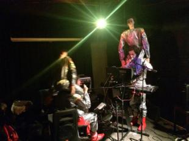
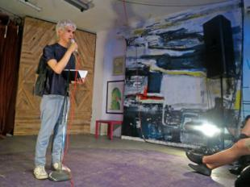
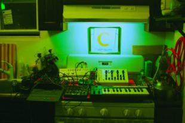
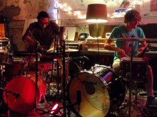

Silent Radio

Mike NigroSongs and Other Sounds
Aired Mon, February 2
The fourth episode of Silent Radio features live performances (musical and otherwise) from the Silent Barn in Fall 2014. Featuring Adult Mom [more…], Tynan DeLong and Ansel Cohen, Ryan P. Conaty, The Yellow Dress, Colin Burgess, Macula Dog, Radio Shock, LXV and Long Distance Poison.

Mike NigroConsider the Physical Object
Aired Mon, November 24
Live recordings and more from Brooklyn's own Silent Barn! Episode Three features sounds from Tonstartssbandht, On A Clear Day, and Blues Con [more…]trol, an interview with the organizers of the Paper Jam Small Press Fest, and comedy from Joe Rumrill and Julio Torres.

Mike NigroNoisy Beginnings
Aired Mon, November 24
The first episode in the Silent Radio series draws inspiration from the Ende Tymes Festival and Modular Synthesizer Equinox Event, with perf [more…]omances by Astro, Mister Matthews, Richard Garet and Byron Westbrook, Max Eilbacher, Loud Objects, and Debbie DJs Dallas.

Mike NigroTemporary Autonomous Zones
Aired Mon, November 24
Live recordings and more from Brooklyn's own Silent Barn! Episode Two features indie popper Frankie Cosmos, a live percussion collaboration [more…]from Greg Saunier (Deerhoof) and Max Jaffe (KillerBOB), a performance by Ted Leo and Alison Crutchfield (Swearin), and highlights from the Ende Tymes Festival.